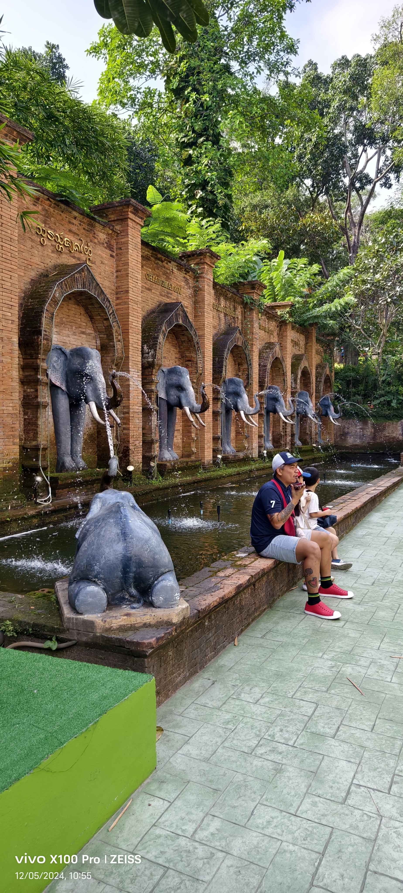
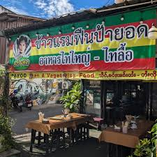
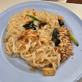
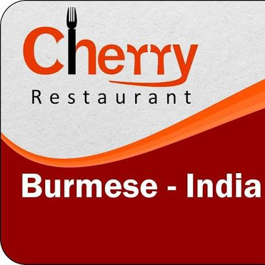
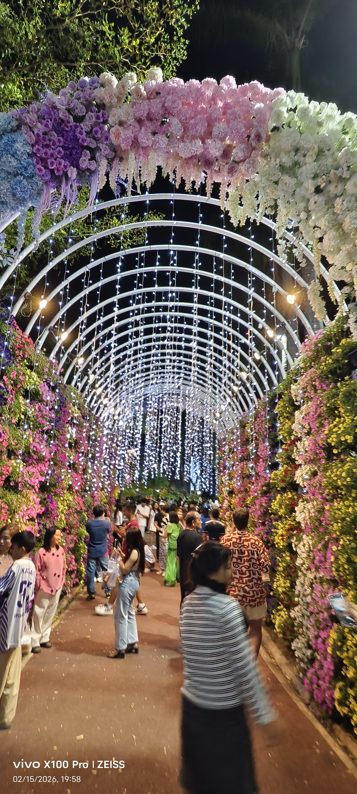
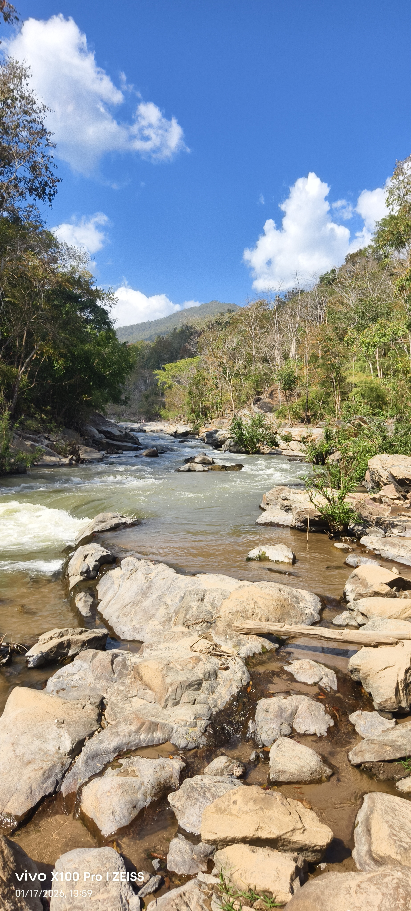
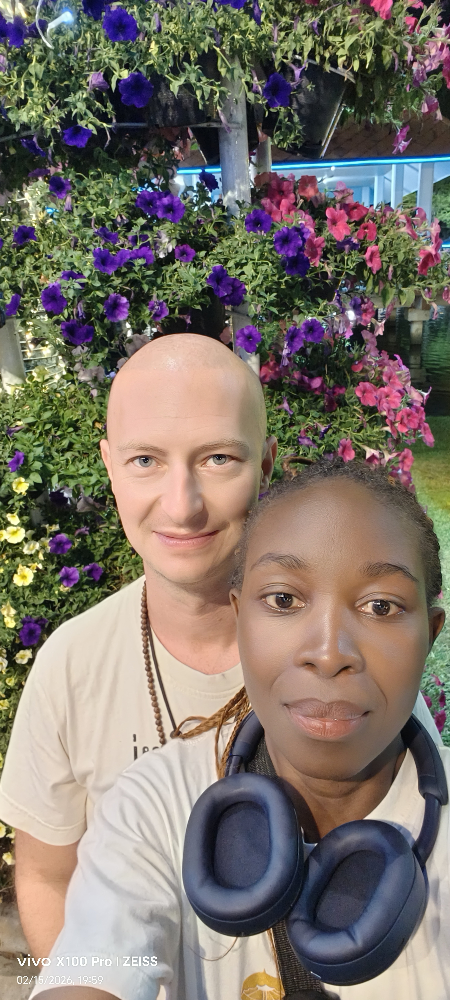
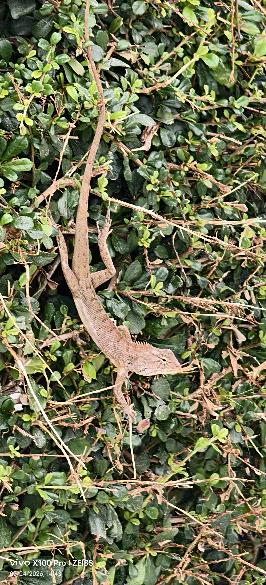
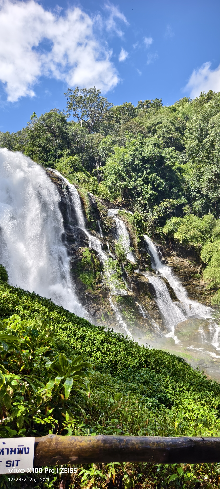

Why Chiang Mai?
Chiang Mai, the city where Ancient and Modern Blend Together
Chiang Mai was founded in 1296 by King Mangrai as the capital of
the Lan Na Kingdom. The historic center is enclosed by remnants of
ancient brick walls and a moat.
Despite wars, earthquakes, and periods of abandonment, the old
city's moat, gates, and portions of the original wall still define
the city's layout today. While many cities demolished their
fortifications, Chiang Mai still preserves much of this medieval
layout, making it easy to visualize what the city looked like
hundreds of years ago.
Within the city and surrounding area are hundreds of temples,
known as "wats." Many are centuries old and contain remarkable
examples of northern Thai art and architecture. It's possible to
walk from a 700-year-old temple to a modern art gallery, startup
office, or specialty coffee roastery within minutes.
This coexistence of deep tradition and contemporary culture is one
of Chiang Mai's most distinctive characteristics. Long before
remote work became mainstream, Chiang Mai developed a reputation
as one of the world's premier destinations for digital nomads
because of its affordable cost of living, cafés, coworking spaces,
and strong international community.
Also, compared to Bangkok, Chiang Mai is generally slower-paced,
more walkable, and easier to explore. This has made it popular
with artists, students, retirees, digital nomads, and long-term
travelers.
Thus Chiang Mai remains a living cultural center where
centuries-old traditions and modern global influences all coexist
in the same city.
RESTAURANTS
My favorite restaurants in Chiang Mai

Payod shan
Payod Shan is a vegetarian restaurant serving Shan foods, which is one of the traditional food styles in Northern Thailand.
Adress:
9 1 Atsadathon Rd, Tambon Si Phum, Mueang Chiang Mai District.
What I like about it
Payod Shan offersa variety of delicious vegan food at a very good price. The place is always full of people of all nationalities passing through Chiang Mai.

Happy Vegetarian
Happy Vegetarian is a recently opened restaurant, serving a variety of vegetarian dishes. The dishes are delicious and very affordable.
Adress:
Wat 140/20 Moo 13, Pa Daet, Mueang Chiang Mai District.
What I like about it
Happy Vegetarian restaurant serves unique flavors of a combination of Thai and Singapore vegetarian dishes. The owners are very friendly and it is always great to go there for a meal and a chat.

Cherry Burmese
Cherry Burmese is a small restaurant serving Burmese, Indian and Thai food. It offers vegan spicy salads, curries, rice,noodle dishes and rotis.
Adress:
121 Ragang Rd, Chiang Mai, Thailand, 50100.
What I like about it
Cherry Burmese serves a variety of delicious curries and masala dishes. Great when craving Indian dishes. They offer free salad and tea on the table.
Gallery
My Photos from Chiang Mai




